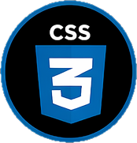
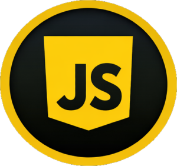

Personal Projects
These are projects I have worked on outside of coursework to practice and build on my skills.
Python
Older Python Project
Many of these projects were done or worked on during the Python for Programmers Course. They tend to be very rough and in some cases unfinished, as I moved on from simpler programs to try to do more advanced or ambitious project.
Included Projects
- Tkinter and GUI tests - (from the book from the Python course)
- Inventory Management System - An attempt to mimic the IMS we use at Target
- FileSorter - A program to practice manipulating files on the hard drive.
- BlackJack - The game BlackJack
- Monkey Math Calculator - Made for my kids (monkey math is number concatenation)
Python Projects
This is some more advanced projects I have worked on and am continuing to work on in my spare time as practice for Python and SQL. This repo employs some automatic formatting tools (Ruff and Black) that ensure the code written is up to formatting standards before submitting. I also have been working on the Readme and Version Logs to map out planned improvements and version improvements for these projects.
Included Projects
- Work Job Tracker - designed to track and report what jobs I'm assigned at work
Java
Java Projects
This repo has many Java Projects that I worked on outside of School. Many of these projects are "extra exercises" taken out of the book
CSD 430 - Server-Side Development
Academic course repository covering server-side web development with Jakarta EE. The course builds a multi-module CRUD application using JSP, JavaBeans, and JDBC against a MySQL database.
Topics Covered
- JSP Scriptlets and dynamic HTML pages
- JavaBeans and data encapsulation
- Full CRUD (Create, Read, Update, Delete) with JDBC and MySQL
- Form handling and input security
- Custom tags and Apache Maven
Web Development


HTML Projects
This serves as a place to put HTML projects to practice with HTML, CSS, and JavaScript.
Included Projects
- Online Rendering of my Book
- Cribbage Scoring App
- Fallout Terminal Hacking Helper App
GitHub Pages for HTML Projects
TLDR Reader
A mobile-friendly web app for reading and saving articles from the TLDR newsletter. Issues are browsed by day and grouped by section, with a persistent starred reading list stored in localStorage. Features JSON import, auto-purge of issues older than 10 days, and no server or account required.
Highlights
- Browse daily TLDR issues grouped by section
- Star articles into a persistent saved reading list
- Import issues via JSON file upload or paste
- Auto-purge: issues older than 10 days cleared weekly
Azure Static Page Host for TLDR Reader
CheatSheets
A curated library of single-page technical reference sheets for programming languages, CS concepts, and developer tools. Each sheet is formatted to fit on an 8.5" × 11" page with a dark mode default and a print-optimized light mode. A print aggregator page uses fetch() and DOMParser to inject multiple sheets and generate PDFs directly in the browser.
Completed Collections
- Concepts (14 sheets)
- RegEx (9 sheets)
- HTML (15 sheets)
- CSS (25 sheets)
- SQL (22 sheets)
- Markdown (3 sheets)
- Mermaid (12 sheets)